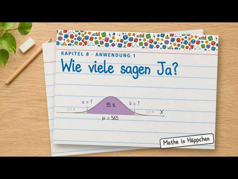

Etappe 4Mit welchem Ergebnis können wir rechnen?

Umgang mit dem Notizblatt — und wie gespeichert wird
Ein Blatt je Etappe. Was Sie hier schreiben, gehört zu dieser Etappe. Gehen Sie weiter, bekommen Sie ein leeres Blatt; kommen Sie zurück, steht Ihres wieder da. Nach unten hört der Bogen nicht auf — schieben Sie ihn weiter, wenn der Platz knapp wird.
Von Hand oder getippt, auf derselben Fläche. Ein Stift zeichnet immer. Mit Maus oder Finger schalten Sie unten um: «von Hand» zeichnet, «tippen» setzt den Text genau dorthin, wo Sie hinklicken.
Radieren oder leeren. Der Radiergummi ist ein dritter Modus neben «von Hand» und «tippen»: Fahren Sie damit über einen Strich, verschwindet dieser Strich — die anderen bleiben. Der Papierkorb daneben leert das ganze Blatt und fragt vorher nach. Getippte Kästchen löschen Sie, indem Sie sie leeren; ein leeres Kästchen verschwindet von selbst.
Wer einen Stift benutzt, schreibt nur noch mit dem Stift. Sobald das Blatt einmal einen Stift gesehen hat, zeichnet es nur noch, was der Stift schreibt — Ihre Hand darf dann aufliegen, und ein Wisch mit dem Finger rollt den Bogen, statt einen Strich zu hinterlassen.
Ein Gerät, ein Browser. Ihre Blätter liegen im Browser, in dem Sie sie geschrieben haben — nicht bei uns und nicht in Ihrem Konto. Arbeiten Sie am Laptop und später am Tablet, finden Sie auf jedem Gerät nur das, was Sie dort gemacht haben. Dasselbe gilt für zwei Browser auf demselben Rechner.
Sie müssen deshalb nicht immer am selben Gerät arbeiten. Laden Sie am Ende einer Arbeitssitzung herunter, was Sie an diesem Gerät gemacht haben — dann haben Sie Ihre Notizen als PDF und stellen sich daraus zusammen, was Sie brauchen.
Wie lange sie liegen bleiben, ist je Browser verschieden. In Chrome, Edge und Firefox bleiben sie, bis Sie selbst die Browserdaten löschen (oder im privaten Fenster arbeiten). Safari auf Mac, iPad und iPhone räumt sie nach etwa sieben Tagen ohne Besuch weg; das ist eingebaut und nicht einstellbar. Wer wöchentlich arbeitet, merkt nichts davon — die Frist beginnt bei jedem Besuch neu, und es zählt jede Seite dieses Materials.
Die zwei Knöpfe. Dieses Kapitel gibt Ihnen die Blätter des Kapitels, in dem Sie gerade sind. Ganzes Modul gibt Ihnen alles, was in diesem Browser liegt; das Deckblatt führt auf, welche Kapitel darin sind. Beide liefern immer den aktuellen Stand — Sie können jederzeit beides holen, so oft Sie wollen.
Alle Blätter dieses Moduls — Notizen und Sortierung — kommen in eine Datei.
Für eine Kompensation muss Ihr Name dabeistehen.
Die Datei liegt jetzt in Ihrem Download-Ordner. Damit sind Sie fertig — alles Weitere ist freiwillig.
Möchten Sie Ihre Notizen abgeben?
Einen Termin ausgleichen? Das läuft in diesem Modul nicht über dieses Paket, sondern über eine Strategieaufgabe: Sie besprechen sie laut und werden dabei aufgenommen — die Aufnahme ist die Abgabe. Näheres steht unter «Studienleistung».
Ihr Name gehört auch in den Dateinamen — deshalb noch einmal: